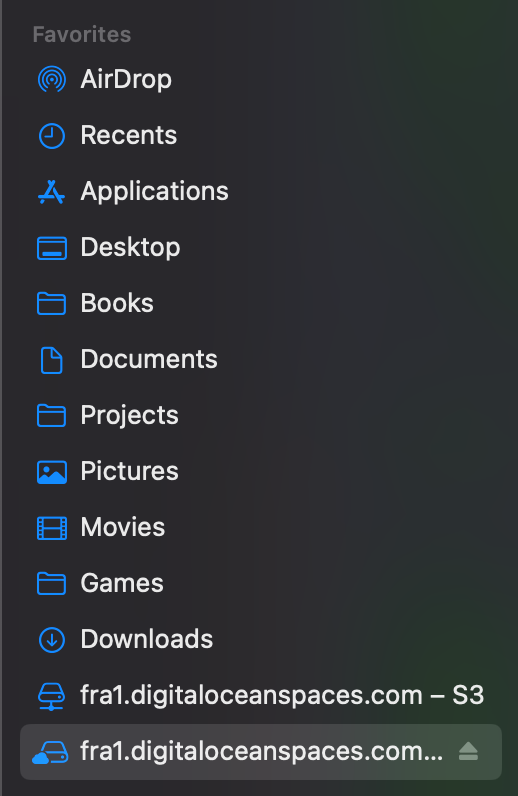

This is not directly related to swift or iOS, but thought it’s worth sharing, since I couldn’t find any article that mention such way to backup files.
I’m one of the people who once used floppies to backup html pages, (3DMax Tutorials back then) from internet caf’es back in 2003, then came CDs, then came DVDs, I also remember the first flash drive my father got me as a teenager, it was 128 MB, this was not affordable for most of the people, now more than 1000x sized SSDs are way cheaper.
The common solutions are google drive & dropbox, they offer (2TB plan) that are $10 monthly, but I prefer to use my own mountable drive with a CDN, to distribute my files with ease, the best way I found to store my work, was storing it on a digital ocean space (similar to AWS S3), and use a client (like cuber-duck) on my mac to directly mount it, or on any device I have.

Pros & Cons
| Pros |
| Direct links! |
| Economic, it starts with 5$ |
| Saved bandwidth, Content Delivery Network is easily setup, where you can save big amounts of transfer without crossing the caps. |
| Total control on meta data and content type of files, etc... for example, you can specify if an uploaded mp4 is streamable or downloadable. |
| Easily mounted into any device or server. |
| Your files are served, and not just stored, for instance, you can host an angular website on it, without having load on your server. |
| You can mask the url, to reflect your domain, which is more professional for clients, when doing demos. |
| Cons |
| - Can require some technical knowledge at first for some people. |
| - Most of the desktop clients to mount such drives are not opensource nor free. |
| - Files cannot be shared with specific people, they are either public or not. |
Use cases are infinite:
- for example, if you do scraping, I was able to download few huge youtube channels as a background job on the server, without consuming my internet plan, without keeping some device downloading, and without having to store files locally, they are stored directly there 🧐.
- it works like a NAS (Network attached server), or as a media center.